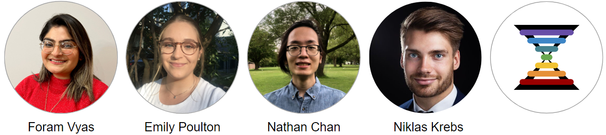

User’s Guide for Hourglass
1 Preface
This is the official guide for Hourglass, the software tool to systematically interrogate multiparametric datasets in a semi-automated manner. It allows users to filter/subset datasets and perform analysis at the global, regional and patient-paired levels to identify communalities and differences.
Figure 1.1: The Hourglass logo.
Hourglass exists as an open-source desktop application for Windows/MacOS and a stand-alone R package. Please refer to our link manuscript for more information.
Figure 1.2: The Hourglass concept: input data, computational processing, output graphs.
Acknowledgements
We are ready to share Hourglass with the world. It’s about time.
First of all, I would like to thank Dr. Barbara Grünwald, whose role cannot be overstated. She is the phenomenal force who helped conceptualize this toolbox and drove this project forward. It started off as a script, with 200 lines of code in a single for loop, and progressively grew bigger as we added more stains and figured out new ways to interrogate the data.
Next, I would like to thank Henry Waterhouse, who built the graphical user interface with me, from planning to launch. Bowen Zhang and Parinaz Nasr Esfahani supported software development and testing for the MacOS version. Foram Vyas, Emily Poulton, and Nathan Chan are the image analysis experts who quantified the IHC data and consistently offered creative feedback. I would like to thank my supervisor, Dr. Rama Khokha, Dr. Niklas Krebs, the Khokha Lab (https://khokhalab.ca/) and collaborators, for contributing and sharing their excitement about Hourglass.
I also would like to thank the developers of R, python, and Kivy for facilitating the creation of Hourglass, the StackOverflow community for having answers to all our questions, Github for providing a platform in which this program is easily accessible, and RStudio for creating R markdown and bookdown to facilitate the making of the R package and this book.
- Kazeera
Contributors

Source Code for Book
See Github repository (link).
Contact Us
Open a new issue on Github (link).